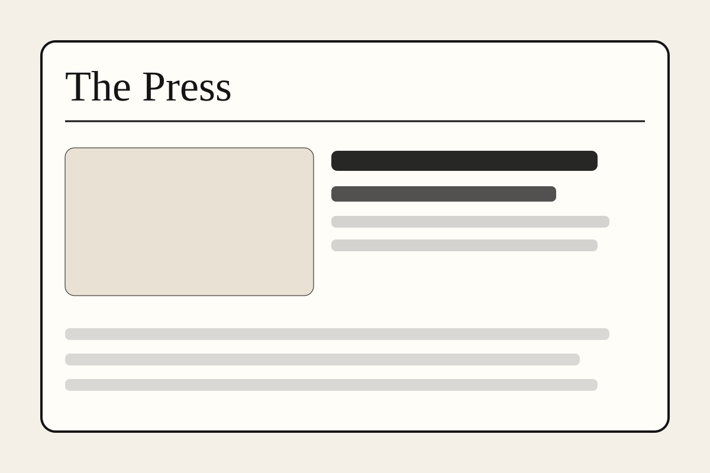

Latest AI Edition
This page updates when you merge the newest Daily AI Edition pull request.
Your workflow is now pointed at ai-edition.html. Once a new draft PR is merged, the newest generated article appears here.

A digital newspaper built for sourced long-form reporting.
Latest AI Edition
Your workflow is now pointed at ai-edition.html. Once a new draft PR is merged, the newest generated article appears here.
